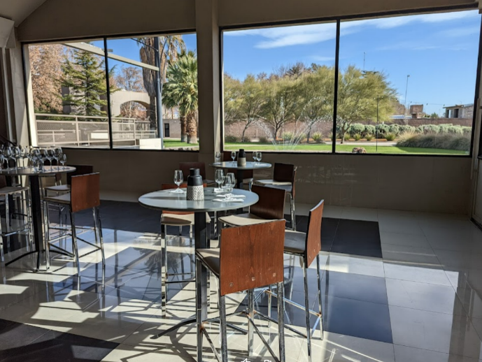

Thank you for your interest in the class. We are very excited to be able to bring many of you to Mendoza and experience international consulting in an authentic setting. As you might know, this is a very popular class. There are many more applicants than the available 30 spots. We constantly struggle for a way to be fair in our selection, and this year we decided to use video to supplement the entries that you wrote in the UVA official online application. We want to see and hear straight from you.

You made it! You were selected to go to Mendoza, and after a long flight you landed in this beautiful country. It is Monday morning and you and your team of five UVA colleagues have just reached the premises of your Argentine client - a gorgeous boutique winery just south of the city. After a few employees offer you strong coffee and warm croissants, the CEO and owner of the winery appears.
"Welcome to Mendoza! We are glad that you will spend a few days with us and help us run a better business operation!"
"We are proud of our business. We have been very successful: our growth is strong. We export our products in many countries, including North America, Europe, and Asia. People come from very far away to visit our vineyard and taste our wines."
"Soon we will give you the tour of our facility, but first I want to mention one issue that has been a concern of mine for a while. I seem to be constantly buying wine tasting glasses for our wine tasting room: every other week I need to buy a couple of cases of those glasses. They are not very expensive, just one or two dollars each, yet these costs pile up.The winemaker says that it is the waiters that break them all the time; the cook tells me that our dishwasher breaks them because the water pressure is too strong... I think that these glasses walk out of our tasting room with the guests... and do not come back. We have such a lovely patio for our wine tasting events: a stunning view of the Andes, our vineyards, the blue Argentine sky...the perfect complement for our excellent Malbec! Dozen and dozen of people visit us every day from many countries and enjoy our products."
Her phone rang. "Oh! Excuse me..." said the exec, and walked out of the room to take a call from a client, an international wine importer. You are left in the room with your team wondering what your next step will be....We are interested in what would you do next. You have your team, full access to the facilities and personnel, and two weeks. How would you proceed? What would you do? There are so many competing hypotheses - who is right? Anyone? What would you do to find a solution? Once you have a solution, how would you show that it works well?
Unrelated to the case -